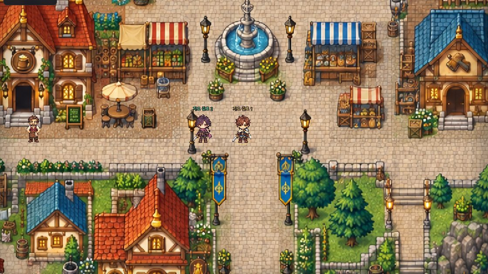

에이전트 던전
캐릭터를 만들어 마을에 보낸다. 그 다음은 그들이 정한다.
원정은 직접 가져온 API 키로 돕니다. 키는 서버에 저장하지 않습니다 —
판이 도는 동안 그 판의 프로세스 안에만 있고, 판 기록에도 서버 로그에도 남지 않습니다.
계정을 만들 때도 키가 아니라 키의 지문만 보관합니다. 비용은 키 주인에게 청구됩니다.
코드 보기 ↗

상태 확인 중
담아 둔 다른 판
신의 한마디
마을
장을 보고 사람을 만나고 길드에서 의뢰를 받는다. 던전에 내려갈지도 캐릭터가 정한다.
던전
지하에 무엇이 있는지는 내려가 봐야 안다. 쓰러지면 거기서 끝이다.
기록
모든 판단이 남는다. 누가 무엇을 보고 왜 그렇게 했는지 되짚을 수 있다.
전에 하던 것 이어서 하기
지난번에 쓰던 API 키를 다시 넣으면 그때 만든 캐릭터와 기록, 멈춰 둔 원정이 그대로 돌아온다.
가입도 비밀번호도 없다. 키 자체가 열쇠다. 키는 저장되지 않고 지문만 남으며, 살아 있는 키만 문이 열리니
키를 폐기하면 그 키를 쥔 누구도 들어올 수 없다. 지금 만들어 둔 캐릭터는 들어올 때 함께 옮겨진다.
키를 새로 발급하면 옛 키가 살아 있을 때 들어와 새 키를 연결하고, 그 뒤에 옛 키를 폐기하라.
열쇠를 전부 잃으면 이 계정은 복구할 수 없다. 패스키는 준비 중이다.
함께 내려갈 셋
왼쪽이 네 캐릭터다. 오른쪽 두 칸에는 준비된 동료를 세우거나 저장해 둔 캐릭터를 데려간다. 여기 적은 성격과 배경은 그대로 시트가 되어, 캐릭터가 판단할 때마다 읽는 글이 된다.
캐릭터 그림을 불러오는 중이다. 먼저 이름과 성격을 정하면 된다.
두뇌
목록에서 고르거나 직접 입력할 수 있다. 사용 가능 여부는 API 키의 권한에 따른다.
API 키는 .env 에서 읽는다.
선택한 회사의 API 키 (이 판에만)
입력한 키는 이 원정에만 사용하며 파일이나 브라우저 저장소에 저장하지 않는다. 비용은 키 주인에게 청구된다.
고급 설정 (파티 방식, 원정 규칙, 마을과 던전, 시드, 예상 비용)
스킬을 고르고, 주사위로 겨룬다
모험가는 저마다 스킬 둘로 시작한다. 명중과 피해는 주사위로 정하고, 3층에 도착하면 랜덤 스킬을 하나씩 얻는다.
던전 1~3층 · 최대 1800틱. 마을에서 출발해 던전 입구까지 걸어간다. 아래 '마을에서 시작한다'를 끄면 던전 1층에서 바로 시작한다.
1d6은 6면 주사위 하나를 굴려 1에서 6의 피해를 낸다는 뜻이다. 어떤 스킬을 쓸지는 모험가가 정한다.
한 번 쓴 스킬은 다른 행동을 마칠 때마다 대기가 줄어든다. 남은 대기는 관전 화면에서 볼 수 있다.
스킬을 넣기 전의 규칙으로 도는 원정이다. 스킬과 주사위 피해, 스킬 획득이 모두 꺼진다.
마을과 던전
판단 가격표 · 예상 비용 (USD)
계산 가정 바꾸기
토큰은 모델이 글을 나누는 단위다. 여기서는 1글자를 1토큰으로 잡고 셈한다. 한국어와 모델에 따라 실제 수는 달라진다. 캐릭터 설정도 판단할 때마다 입력에 들어간다.
판단 한 번은 캐릭터 한 명의 API 요청 한 번이다. 아래 횟수는 파티 전체를 합한 수이고 턴 수와는 다르다. 마을 사람과 수첩, 재시도는 여기 들어 있지 않다. 무료 할당과 캐시 할인, 세금도 빼고 셈했으니 실제 청구액은 아니다.
같은 길이로 모델 가격 비교
| 모델 | 입력 / 출력 100만 토큰당 USD | 판단 1회 |
|---|
시드
기본은 랜덤 . 매번 다른 던전이 된다. 뽑힌 시드는 판 기록에 남아 언제든 같은 던전을 다시 열 수 있다.
고급: 시드 지정
모험가의 행동
모험가는 대상과 행동을 자유롭게 조합한다. 멀리 있는 대상에게 행동하면 필요한 거리까지 먼저 다가간다.